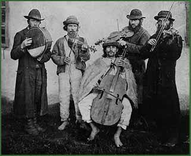

| This tune from the musical tradition of the Jews of Transylvania was played before the bride left toward the wedding ceremony at the synagogue. | |||
|  | ||||||||||
| The Jewish instrumental repertoire, the traditional klezmer music, could be found in the eastern provinces of Hungary. | ||||||||||
|
||||||||||